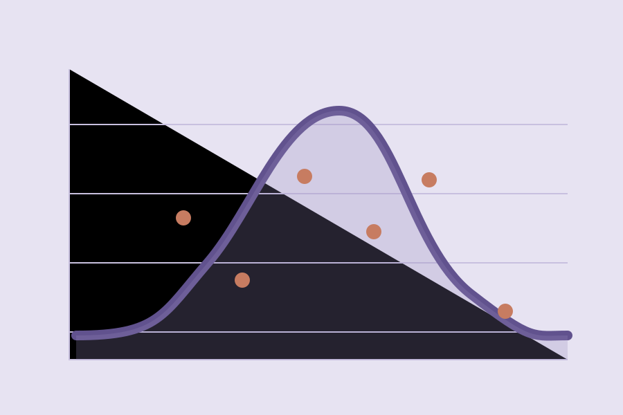

HERTIE SCHOOL
Bayesian Hierarchical Modelling of Food Insecurity
Research note examining demographic and governorate-level variation in food insecurity among female-headed households in Syria.

Modelling variation in food insecurity across demographic groups and governorates using Bayesian hierarchical estimation.
Research question
How are age, marital status and geographic context associated with food insecurity among female-headed households in Syria? Can a hierarchical model represent between-group variation while appropriately expressing uncertainty?
From research question to hierarchical model
The research note investigates how age and marital status relate to food insecurity among female-headed households, allowing baseline insecurity to vary across governorates. The analysis uses 466 households from Hama, Deir-ez-Zor, Aleppo, Homs and Rural Damascus, with log-transformed RCSI as the outcome.
A non-centred parameterisation was used to support estimation of hierarchical effects. Results are interpreted as observational associations, not causal impacts of marital status or age.
Why a Bayesian approach?
Partial pooling offers a principled way to estimate group-level patterns when some age, marital-status or geographic subgroups are small. Posterior uncertainty is central to interpreting differences rather than treating point estimates as definitive.
Data & outcome
The research note analyses 466 female-headed households from five Syrian governorates, using 2023 baseline data. The outcome is log(1 + RCSI), a transformed measure of food-related coping strategies. The analysis focuses on married and widowed female heads.
Model specification
A non-centred hierarchical model estimates varying effects for age group, marital status, governorate and their interaction structure. Weakly informative priors and partial pooling help stabilize estimates where group sizes are small.
Model checks
The research note reports MCMC convergence diagnostics, prior predictive checks and posterior predictive checks. These checks assess sampling behaviour and model fit; they do not establish causality.
Interpretation
The analysis explores heterogeneous vulnerability and uncertainty across demographic and geographic groups. Results are associational and sensitive to model structure and sample coverage.
Research outputs & next steps
The complete research note contains the model specification, prior table and diagnostic figures. A public code repository can follow once scripts have been cleaned and the restricted dataset is excluded.
Institutional research data and nonpublic analytical code are not shared. External research outputs remain the property of their respective authors and organizations.
Original research note
The full research note documents the model specification, data preparation and statistical interpretation. The cover below is taken from my submitted coursework.